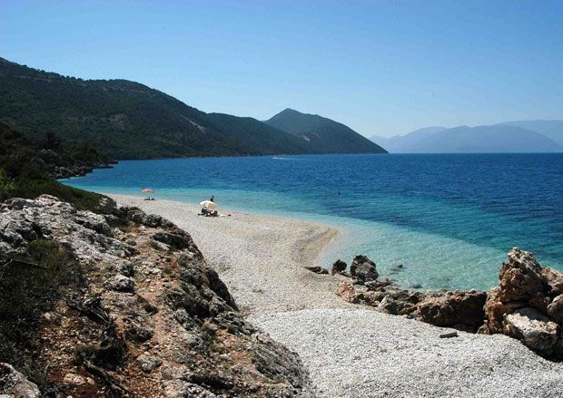

Η Ιθάκη αποτελεί ένα νησί του Ιονίου Πελάγους. Το ιδιαίτερο χαρακτηριστικό της που την κάνει και ξεχωριστή είναι το ότι περιβάλλεται από μοναδικούς κόλπους με πράσινα και μπλε κρυστάλλινα νερά. Έχει ωραίες ταβερνούλες και εναλλακτικά εστιατόρια με γεύσεις τοπικές που απογειώνουν τη μεσογειακή κουζίνα. Τα βράδια μπορείς να χαλαρώσεις κάνοντας μια βόλτα στο Βαθύ. Μια συμβουλή: να ενοικιάσετε σκάφος, γιατί βλέπετε τις παραλίες με ένα άλλο μάτι.
